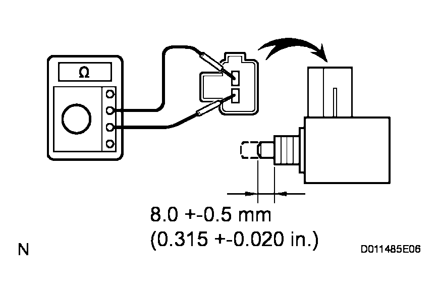

Home
>>
Scion
>>
2006
>>
xB Standard
>>
Repair and Diagnosis
>>
Transmission
>>
Clutch
>>
Clutch
>>
Clutch Start Switch
>>
Removal
Clutch Start Switch: Removal
REMOVE CLUTCH START SWITCH ASSEMBLY
Disconnect the clutch start switch connector.
Remove the 2 nuts and clutch start switch with the bracket.
Remove the nut and clutch start switch from the bracket.
Fig 1: Measuring Resistance Between Terminals

Courtesy of © TOYOTA, LICENSE AGREEMENT TMS1002